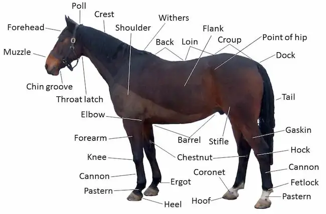
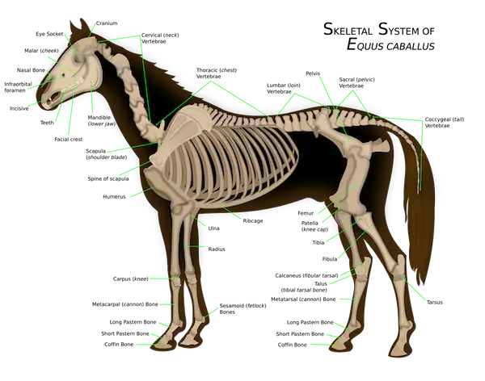

Home
Horses are a member of the equus family. Other members of this family include donkeys, kiang, onager, and three species of zebra. The scientific name for modern domesticated horses is Equus ferus caballus. Horses in their modern form evolved an estimated 5 million years ago.

Horses are herbivores who evolved to spend the majority of their time grazing. When given free access to pasture, horses spend between 10 and 17 hours grazing. They have a long digestive tract which enables them to extract nutrients from plant matter. Being prey animals, horses have a strong fight-or-flight response. Foals generally stand within an hour of their birth, and are able to run within ninety minutes.
Female horses are called mares; male horses are called stallions. Castrated male horses are called geldings. Foals are horses under a year old; yearlings are between one and two years old.
Horses come in a myriad of colors, but all colors are either red or black based. There are at least 13 individual alleles which can influence these base genes. Some of these alleles control the gene expression, or suppression, of dilution, spotting patterns, and graying, among several others.

Horses are measured from their withers - the highest stable point of their body - instead of their head. In the United States, they are measured in hands; each hand is equivalent to four inches. "hh" is the standard abbreviation for hands high. In Europe and other parts of the world, horses are usually measured in centimeters. The average height of a riding horse is about 15.2 hh (62 inches or 157.5 centimeters).
Horses have between 36 and 44 permanent teeth after losing their 24 deciduous teeth between the ages of two and five. Stallions and geldings usually have between 40 and 44 teeth, while mares usually have 36 to 40 teeth. Canine teeth are more common in males than females. It is commonly said that you can age a horse by its teeth, but this has been found to only be accurate until the horse is around five years old, when all of their adult teeth have come in. The older the horse gets, the harder it is to accurately estimate the horse's age using its teeth.
Horse hooves are made out of keratin and grow at a steady rate. The hoof is a very complex structure. Because horses' lower legs do not have any muscles, the vascular network in the hoof is used to 'pump' the blood back to the horse's heart via compression.